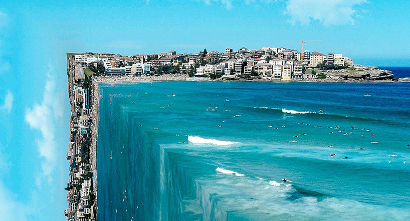
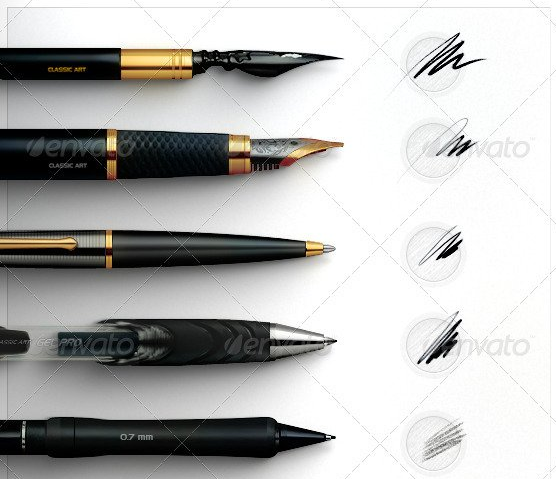

登录/注册
首页
教程集
素材库
灵感池
学摄影
黑白质感人像照片打造教程
美图配文排版教程
爱心网页背景图片素材
高清水滴背景，水滴背景图片
人人游戏APP平台体验UI设计案例图
最新Iphone APP界面设计欣赏
时尚摄影欣赏
器材知识
欢迎来到PS教程网学习PS教程和下载PS素材!
特别推荐
炫酷的游戏文字特效PS样式下载
PS灯光工厂滤镜
4款PS毛笔字体下载
《大鱼海棠》一大波海报
关于排版设计，新手常犯的几个错误
新手入门的15个摄影技巧
非常细腻的鼠绘眼睛教程（手绘提高）
什么样的游戏LOGO才是优秀的？
PS结合SAI绘制一个萌萌哒的小姑娘
分享四个不错的查找图标网站


特别推荐
风光摄影：南疆
泸沽湖，母系社会最后的伊甸园
会PS的摄影师老爸新作
教你在PS中如何做金属复古质感文字
一个插画师在火车上的自娱自乐！
反骨风格：毁童年三观插画
创意的去污液广告！
单反镜头讲解，如何选择镜头，各类镜头解说
PS立体字新手入门教程
摄影师Louis Dazy作品欣赏